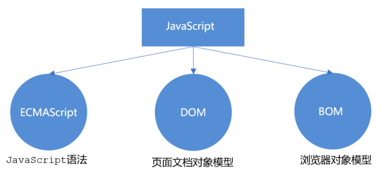
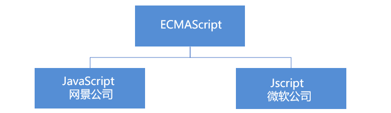

JS基础
JavaScript¶
JavaScript 最初被创建的目的是“使网页更生动”。
这种编程语言写出来的程序被称为 脚本。它们可以被直接写在网页的 HTML 中，在页面加载的时候自动执行。
脚本被以纯文本的形式提供和执行。它们不需要特殊的准备或编译即可运行。
如今，JavaScript 不仅可以在浏览器中执行，也可以在服务端执行，甚至可以在任意搭载了 JavaScript 引擎 的设备中执行。
浏览器中嵌入了 JavaScript 引擎，有时也称作“JavaScript 虚拟机”。
不同的引擎有不同的“代号”，例如：
- V8 —— Chrome、Opera 和 Edge 中的 JavaScript 引擎。
- SpiderMonkey —— Firefox 中的 JavaScript 引擎。
- ……还有其他一些代号，像 “Chakra” 用于 IE，“JavaScriptCore”、“Nitro” 和 “SquirrelFish” 用于 Safari，等等。
上面这些术语很容易记住，因为它们经常出现在开发者的文章中。我们也会用到这些术语。例如，如果“V8 支持某个功能”，那么我们可以认为这个功能大概能在 Chrome、Opera 和 Edge 中正常运行。
浏览器中的 JavaScript 能做什么？
现代的 JavaScript 是一种“安全的”编程语言。它不提供对内存或 CPU 的底层访问，因为它最初是为浏览器创建的，不需要这些功能。
JavaScript 的能力很大程度上取决于它运行的环境。例如，Node.js 支持允许 JavaScript 读取/写入任意文件，执行网络请求等的函数。
浏览器中的 JavaScript 可以做与网页操作、用户交互和 Web 服务器相关的所有事情。
例如，浏览器中的 JavaScript 可以做下面这些事：
- 在网页中添加新的 HTML，修改网页已有内容和网页的样式。
- 响应用户的行为，响应鼠标的点击，指针的移动，按键的按动。
- 向远程服务器发送网络请求，下载和上传文件（所谓的 AJAX 和 COMET 技术）。
- 获取或设置 cookie，向访问者提出问题或发送消息。
- 记住客户端的数据（“本地存储”）。
是什么使得 JavaScript 与众不同？
至少有 3 件事值得一提：
- 与 HTML/CSS 完全集成。
- 简单的事，简单地完成。
- 被所有的主流浏览器支持，并且默认开启。
JavaScript 是将这三件事结合在一起的唯一的浏览器技术。
这就是为什么 JavaScript 与众不同。这也是为什么它是用于创建浏览器界面的使用最广泛的工具。
此外，JavaScript 还可用于创建服务器和移动端应用程序等。
JavaScript “上层”语言
不同的人想要不同的功能。JavaScript 的语法也不能满足所有人的需求。
这是正常的，因为每个人的项目和需求都不一样。
因此，最近出现了许多新语言，这些语言在浏览器中执行之前，都会被 编译（转化）成 JavaScript。
现代化的工具使得编译速度非常快且透明，实际上允许开发者使用另一种语言编写代码并会将其“自动转换”为 JavaScript。
此类语言的示例有：
- CoffeeScript 是 JavaScript 的一种语法糖。它引入了更加简短的语法，使我们可以编写更清晰简洁的代码。通常，Ruby 开发者喜欢它。
- TypeScript 专注于添加“严格的数据类型”以简化开发，以更好地支持复杂系统的开发。由微软开发。
- Flow 也添加了数据类型，但是以一种不同的方式。由 Facebook 开发。
- Dart 是一门独立的语言。它拥有自己的引擎，该引擎可以在非浏览器环境中运行（例如手机应用），它也可以被编译成 JavaScript。由 Google 开发。
总结
- JavaScript 最开始是专门为浏览器设计的一门语言，但是现在也被用于很多其他的环境。
- JavaScript 作为被应用最广泛的浏览器语言，且与 HTML/CSS 完全集成，具有独特的地位。
- 有很多其他的语言可以被“编译”成 JavaScript，这些语言还提供了更多的功能。建议最好了解一下这些语言，至少在掌握了 JavaScript 之后大致的了解一下。
JS 的组成¶

ECMAScript¶
ECMAScript 是由ECMA 国际（ 原欧洲计算机制造商协会）进行标准化的一门编程语言，这种语言在万维网上应用广泛，它往往被称为 JavaScript或 JScript，但实际上后两者是 ECMAScript 语言的实现和扩展。

ECMAScript：规定了JS的编程语法和基础核心知识，是所有浏览器厂商共同遵守的一套JS语法工业标准。
更多参看MDN: MDN手册
DOM：文档对象模型¶
文档对象模型（DocumentObject Model，简称DOM），是W3C组织推荐的处理可扩展标记语言的标准编程接口。通过 DOM 提供的接口可以对页面上的各种元素进行操作（大小、位置、颜色等）
BOM：浏览器对象模型¶
浏览器对象模型(Browser Object Model，简称BOM) 是指浏览器对象模型，它提供了独立于内容的、可以与浏览器窗口进行互动的对象结构。通过BOM可以操作浏览器窗口，比如弹出框、控制浏览器跳转、获取分辨率等。
开发者工具¶
代码是很容易出现错误的。你也很可能犯错误……哦，我在说什么？只要你是人，你 一定 会犯错误（在写代码的时候），除非你是机器人。
但在浏览器中，默认情况下用户是看不到错误的。所以，如果脚本中有错误，我们看不到是什么错误，更不能够修复它。
为了发现错误并获得一些与脚本相关且有用的信息，浏览器内置了“开发者工具”。
通常，开发者倾向于使用 Chrome 或 Firefox 进行开发，因为它们有最好的开发者工具。一些其它的浏览器也提供开发者工具，有时还具有一些特殊的功能，通常它们都是在“追赶” Chrome 或 Firefox。所以大多数人都有“最喜欢”的浏览器，当遇到某个浏览器独有的问题的时候，人们就会切换到其它的浏览器。
开发者工具很强大，功能丰富。首先，我们将学习如何打开它们，查找错误和运行 JavaScript 命令。
Google Chrome¶
打开网页按下 F12 键，如果你使用 Mac，试试 Cmd+Opt+J。
默认情况下，开发者工具会被在 Console 标签页中打开。
JavaScript 体验¶
Hello World¶
“script” 标签¶
我们几乎可以使用 <script> 标签将 JavaScript 程序插入到 HTML 文档的任何位置。
比如：
<!DOCTYPE HTML>
<html>
<body>
<p>script 标签之前...</p>
<script>
alert('Hello, world!');
</script>
<p>...script 标签之后</p>
</body>
</html>
你可以通过点击右上角的“播放”按钮来运行这个例子。
<script> 标签中包裹了 JavaScript 代码，当浏览器遇到 <script> 标签，代码会自动运行。
现代的标记（markup）¶
<script> 标签有一些现在很少用到的特性（attribute），但是我们可以在老代码中找到它们：
type特性：<script type=…>
在老的 HTML4 标准中，要求 script 标签有 type 特性。通常是 type="text/javascript"。这样的特性声明现在已经不再需要。而且，现代 HTML 标准已经完全改变了此特性的含义。现在，它可以用于 JavaScript 模块。但这是一个高级话题，我们将在本教程的另一部分中探讨 JavaScript 模块。
language特性：<script language=…>
这个特性是为了显示脚本使用的语言。这个特性现在已经没有任何意义，因为语言默认就是 JavaScript。不再需要使用它了。
脚本¶
JS 有3种书写位置，分别为行内、内嵌和外部。
行内式
<input type="button" value="点我试试" onclick="alert('Hello World')" />
- 可以将单行或少量 JS 代码写在HTML标签的事件属性中（以 on 开头的属性），如：onclick
- 注意单双引号的使用：在HTML中我们推荐使用双引号, JS 中我们推荐使用单引号
- 可读性差， 在html中编写JS大量代码时，不方便阅读；
- 引号易错，引号多层嵌套匹配时，非常容易弄混；
- 特殊情况下使用
内嵌式
<script>
alert('Hello World~!');
</script>
- 可以将多行JS代码写到 script 标签中
- 内嵌 JS 是学习时常用的方式
外部JS文件
如果你有大量的 JavaScript 代码，我们可以将它放入一个单独的文件。
脚本文件可以通过 src 特性（attribute）添加到 HTML 文件中。
<script src="/path/to/script.js"></script>
这里，/path/to/script.js 是脚本文件从网站根目录开始的绝对路径。当然也可以提供当前页面的相对路径。例如，src ="script.js"，就像 src="./script.js"，表示当前文件夹中的 "script.js" 文件。
我们也可以提供一个完整的 URL 地址，例如：
<script src="https://cdnjs.cloudflare.com/ajax/libs/lodash.js/4.17.11/lodash.js"></script>
代码结构¶
语句¶
语句是执行行为（action）的语法结构和命令。
我们已经见过了 alert('Hello, world!') 这样可以用来显示消息的语句。
我们可以在代码中编写任意数量的语句。语句之间可以使用分号进行分割。
例如，我们将 “Hello World” 这条信息一分为二：
alert('Hello'); alert('World');
通常，每条语句独占一行，以提高代码的可读性：
alert('Hello');
alert('World');
分号¶
当存在换行符（line break）时，在大多数情况下可以省略分号。
下面的代码也是可以运行的：
alert('Hello')
alert('World')
在这，JavaScript 将换行符理解成“隐式”的分号。这也被称为 自动分号插入。
在大多数情况下，换行意味着一个分号。但是“大多数情况”并不意味着“总是”！
有很多换行并不是分号的例子，例如：
alert(3 +
1
+ 2);
代码输出 6，因为 JavaScript 并没有在这里插入分号。显而易见的是，如果一行以加号 "+" 结尾，那么这是一个“不完整的表达式”，不需要分号。所以，这个例子得到了预期的结果。
但存在 JavaScript 无法确定是否真的需要自动插入分号的情况。
这种情况下发生的错误是很难被找到和解决的。
alert("Hello");
[1, 2].forEach(alert);
你不需要考虑方括号 [] 和 forEach 的含义，现在它们并不重要，之后我们会学习它们。让我们先记住这段代码的运行结果：先显示 Hello，然后显示 1，然后 2。
现在，让我们删除 alert 语句后的分号：
alert("Hello")[1, 2].forEach(alert);
看起来很奇怪，对吧？在这种情况下，这样将两行代码合并到一起是不对的。我们需要在 alert 后面加一个分号，代码才能正常运行。
这也可能发生在其他情况下。
即使语句被换行符分隔了，我们依然建议在它们之间加分号。这个规则被社区广泛采用。我们再次强调一下 —— 大部分时候可以省略分号，但是最好不要省略分号，尤其对新手来说。
注释¶
随着时间推移，程序变得越来越复杂。为代码添加 注释 来描述它做了什么和为什么要这样做，变得非常有必要了。
你可以在脚本的任何地方添加注释，它们并不会影响代码的执行，因为引擎会直接忽略它们。
单行注释以两个正斜杠字符 // 开始。
这一行的剩余部分是注释。它可能独占一行或者跟随在一条语句的后面。
就像这样：
// 这行注释独占一行
alert('Hello');
alert('World'); // 这行注释跟随在语句后面
多行注释以一个正斜杠和星号开始 “/\*” 并以一个星号和正斜杠结束 “\*/”。
就像这样:
/* 两个消息的例子。
这是一个多行注释。
*/
alert('Hello');
alert('World');
变量¶
大多数情况下，JavaScript 应用需要处理信息。这有两个例子：
- 一个网上商店 —— 这里的信息可能包含正在售卖的商品和购物车。
- 一个聊天应用 —— 这里的信息可能包括用户和消息等等。
变量就是用来储存这些信息的。
变量¶
变量 是数据的“命名存储”。我们可以使用变量来保存商品、访客和其他信息。
在 JavaScript 中创建一个变量，我们需要用到 let 关键字。
下面的语句创建（也可以称为 声明 或者 定义）了一个名称为 “message” 的变量：
let message;
现在，我们可以通过赋值运算符 = 为变量添加一些数据：
let message;
message = 'Hello'; // 将字符串 'Hello' 保存在名为 message 的变量中
现在这个字符串已经保存到与该变量相关联的内存区域了，我们可以通过使用该变量名称访问它：
let message;
message = 'Hello!';
alert(message); // 显示变量内容
简洁一点，我们可以将变量定义和赋值合并成一行：
let message = 'Hello!'; // 定义变量，并且赋值
alert(message); // Hello!
也可以在一行中声明多个变量：
let user = 'John', age = 25, message = 'Hello';
看上去代码长度更短，但并不推荐这样。为了更好的可读性，请一行只声明一个变量。
多行变量声明有点长，但更容易阅读：
let user = 'John';
let age = 25;
let message = 'Hello';
一些程序员采用下面的形式书写多个变量：
let user = 'John',
age = 25,
message = 'Hello';
……甚至使用“逗号在前”的形式：
let user = 'John'
, age = 25
, message = 'Hello';
技术上讲，这些变体都有一样的效果。所以，这是个个人品味和审美方面的问题。
变量命名¶
JavaScript 的变量命名有两个限制：
- 变量名称必须仅包含字母，数字，符号
$和_。 - 首字符必须非数字。
有效的命名，例如：
let userName;
let test123;
如果命名包括多个单词，通常采用驼峰式命名法（camelCase）。也就是，单词一个接一个，除了第一个单词，其他的每个单词都以大写字母开头：myVeryLongName。
有趣的是，美元符号 '$' 和下划线 '_' 也可以用于变量命名。它们是正常的符号，就跟字母一样，没有任何特殊的含义。
下面的命名是有效的：
let $ = 1; // 使用 "$" 声明一个变量
let _ = 2; // 现在用 "_" 声明一个变量
alert($ + _); // 3
下面的变量命名不正确：
let 1a; // 不能以数字开始
let my-name; // 连字符 '-' 不允许用于变量命名
保留字
有一张 保留字列表，这张表中的保留字无法用作变量命名，因为它们被用于编程语言本身了。
比如，let、class、return、function 都被保留了。
下面的代码将会抛出一个语法错误：
let let = 5; // 不能用 "let" 来命名一个变量，错误！
let return = 5; // 同样，不能使用 "return"，错误！
常量¶
声明一个常数（不变）变量，可以使用 const 而非 let：
const myBirthday = '18.04.1982';
使用 const 声明的变量称为“常量”。它们不能被修改，如果你尝试修改就会发现报错：
const myBirthday = '18.04.1982';
myBirthday = '01.01.2001'; // 错误，不能对常量重新赋值
当程序员能确定这个变量永远不会改变的时候，就可以使用 const 来确保这种行为，并且清楚地向别人传递这一事实。
大写形式的常数¶
一个普遍的做法是将常量用作别名，以便记住那些在执行之前就已知的难以记住的值。
使用大写字母和下划线来命名这些常量。
例如，让我们以所谓的“web”（十六进制）格式为颜色声明常量：
const COLOR_RED = "#F00";
const COLOR_GREEN = "#0F0";
const COLOR_BLUE = "#00F";
const COLOR_ORANGE = "#FF7F00";
// ……当我们需要选择一个颜色
let color = COLOR_ORANGE;
alert(color); // #FF7F00
好处：
COLOR_ORANGE比"#FF7F00"更容易记忆。- 比起
COLOR_ORANGE而言，"#FF7F00"更容易输错。 - 阅读代码时，
COLOR_ORANGE比#FF7F00更易懂。
什么时候该为常量使用大写命名，什么时候进行常规命名？让我们弄清楚一点。
作为一个“常数”，意味着值永远不变。但是有些常量在执行之前就已知了（比如红色的十六进制值），还有些在执行期间被“计算”出来，但初始赋值之后就不会改变。
例如：
const pageLoadTime = /* 网页加载所需的时间 */;
pageLoadTime 的值在页面加载之前是未知的，所以采用常规命名。但是它仍然是个常量，因为赋值之后不会改变。
换句话说，大写命名的常量仅用作“硬编码（hard-coded）”值的别名。
正确命名变量¶
谈到变量，还有一件非常重要的事。
一个变量名应该有一个清晰、明显的含义，对其存储的数据进行描述。
变量命名是编程过程中最重要且最复杂的技能之一。快速地浏览变量的命名就知道代码是一个初学者还是有经验的开发者写的。
在一个实际项目中，大多数的时间都被用来修改和扩展现有的代码库，而不是从头开始写一些完全独立的代码。当一段时间后，我们做完其他事情，重新回到我们的代码，找到命名良好的信息要容易得多。换句话说，变量要有个好名字。
声明变量之前，多花点时间思考它的更好的命名。你会受益良多。
一些可以遵循的规则：
- 使用易读的命名，比如
userName或者shoppingCart。 - 离诸如
a、b、c这种缩写和短名称远一点，除非你真的知道你在干什么。 - 变量名在能够准确描述变量的同时要足够简洁。不好的例子就是
data和value，这样的名称等于什么都没说。如果能够非常明显地从上下文知道数据和值所表达的含义，这样使用它们也是可以的。 - 脑海中的术语要和团队保持一致。如果网站的访客称为“用户”，则我们采用相关的变量命名，比如
currentUser或者newUser，而不要使用currentVisitor或者一个newManInTown。
听上去很简单？确实如此，但是在实践中选择一个一目了然的变量名称并非如此简单。大胆试试吧。
总结
我们可以使用 var、let 或 const 声明变量来存储数据。
let— 现代的变量声明方式。var— 老旧的变量声明方式。一般情况下，我们不会再使用它。但是，我们会在 旧时的 "var" 章节介绍var和let的微妙差别，以防你需要它们。const— 类似于let，但是变量的值无法被修改。
变量应当以一种容易理解变量内部是什么的方式进行命名。
交互¶
alert¶
由于我们将使用浏览器作为我们的演示环境，让我们看几个与用户交互的函数：alert，prompt 和confirm。
这个我们前面已经看到过了。它会显示一条信息，并等待用户按下 “OK”。
例如：
alert("Hello");
弹出的这个带有信息的小窗口被称为 模态窗。“modal” 意味着用户不能与页面的其他部分（例如点击其他按钮等）进行交互，直到他们处理完窗口。在上面示例这种情况下 —— 直到用户点击“确定”按钮。
prompt¶
prompt 函数接收两个参数：
result = prompt(title, [default]);
浏览器会显示一个带有文本消息的模态窗口，还有 input 框和确定/取消按钮。
title
显示给用户的文本
default
可选的第二个参数，指定 input 框的初始值。
访问者可以在提示输入栏中输入一些内容，然后按“确定”键。然后我们在 result 中获取该文本。或者他们可以按取消键或按 Esc 键取消输入，然后我们得到 null 作为 result。
prompt 将返回用户在 input 框内输入的文本，如果用户取消了输入，则返回 null。
举个例子：
let age = prompt('How old are you?', 100);
alert(`You are ${age} years old!`); // You are 100 years old!
confirm¶
语法：
result = confirm(question);
confirm 函数显示一个带有 question 以及确定和取消两个按钮的模态窗口。
点击确定返回 true，点击取消返回 false。
例如：
let isBoss = confirm("Are you the boss?");
alert( isBoss ); // 如果“确定”按钮被按下，则显示 true
总结
我们学习了与用户交互的 3 个浏览器的特定函数：
alert
显示信息。
prompt
显示信息要求用户输入文本。点击确定返回文本，点击取消或按下 Esc 键返回 null。
confirm
显示信息等待用户点击确定或取消。点击确定返回 true，点击取消或按下 Esc 键返回 false。
这些方法都是模态的：它们暂停脚本的执行，并且不允许用户与该页面的其余部分进行交互，直到窗口被解除。
上述所有方法共有两个限制：
- 模态窗口的确切位置由浏览器决定。通常在页面中心。
- 窗口的确切外观也取决于浏览器。我们不能修改它。
这就是简单的代价。还有其他一些方法可以显示更漂亮的窗口，并与用户进行更丰富的交互，但如果“花里胡哨”不是非常重要，那使用本节讲的这些方法也挺好。